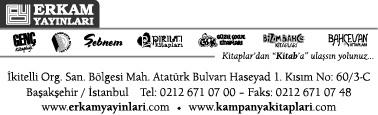

© Fikir ve Sanat Eserleri Yasası gereğince bu eserin yayın hakkı anlaşmalı olarak
Erkam Yayın San. ve Tic. A.Ş.’ne aittir.
İzinsiz, kısmen ya da
tamamen çoğaltılıp yayınlanamaz.
Erkam Yayın No: 538
Redaksiyon:
Abdullah Sert
Mustafa Eriş
Prof. Dr. Ömer Çelik (Mülk, Kalem, Hakka, İnsan, Nebe’)
Dr. Murad Kaya (Meâric, Nuh, Cin)
Doç. Dr. Durak Pusmaz (Müzzemmil, Müddessir, Kıyâme)
Prof. Dr. Mehmed Bulut (Mürselât)
Tercüme:
(Arapça):İbrahim Tüfekçi
(Farsça):Y. Doç. Dr. Halil Baltacı
Mizanpaj & Kapak:
Altınolukgrafik / Halil Ermiş
ISBN No:
978-605-302-348-7
Yayın ve Matbaa Sertifika No: 19891
Baskı Tarihi: İstanbul / 2016